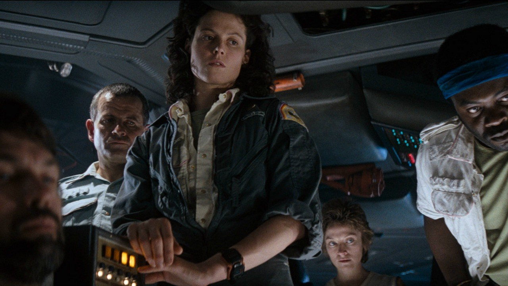
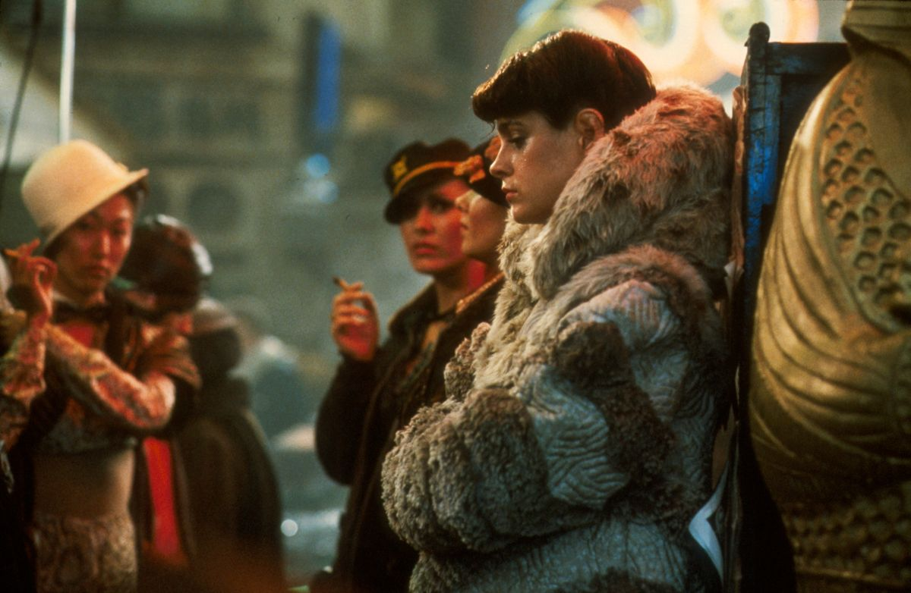
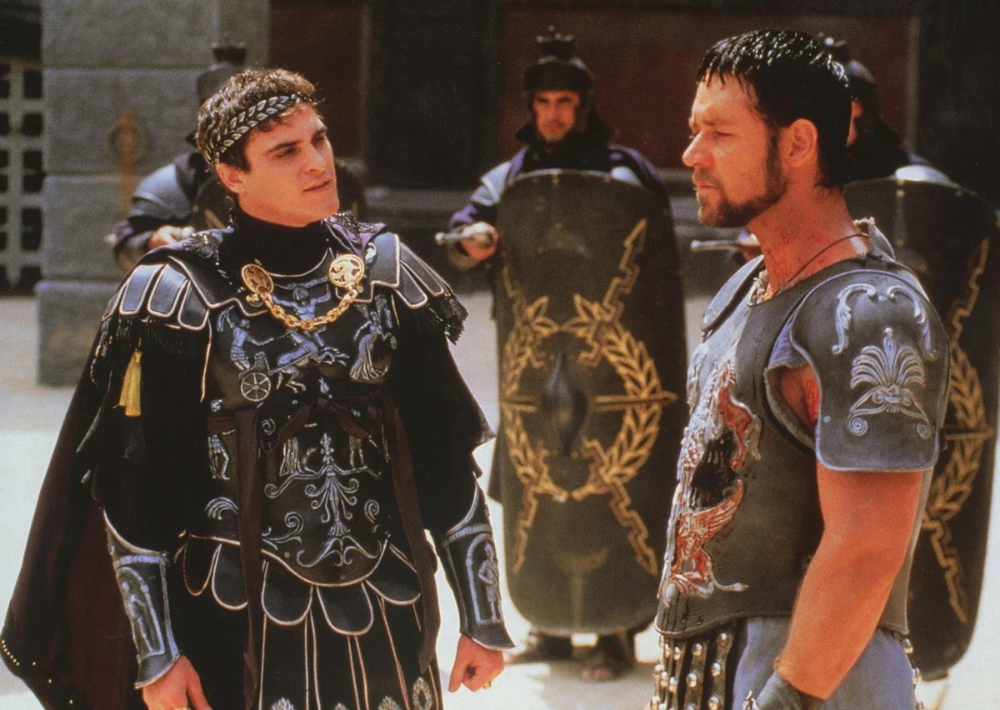
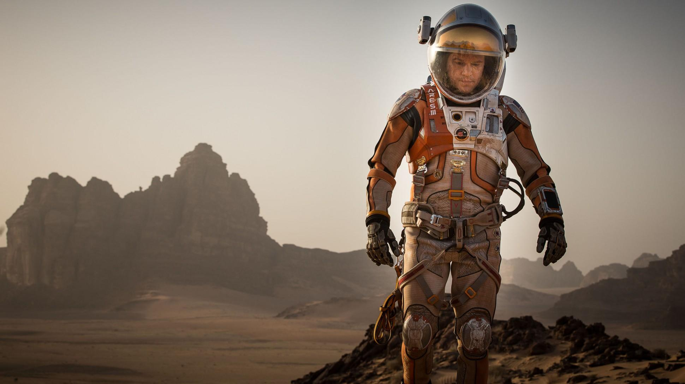
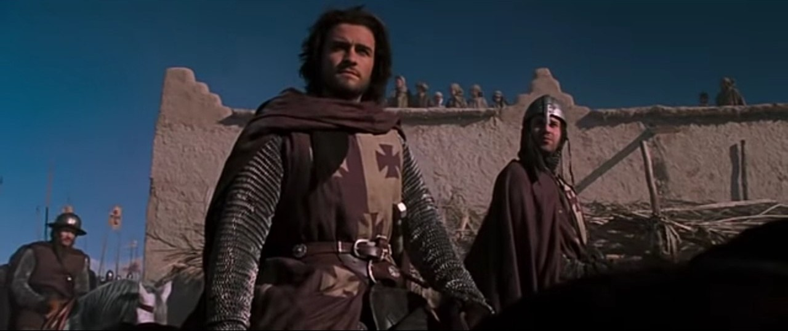

Ридли Скотт
30.11.1937
Саут-Шилдс, Великобритания
Ридли Скотт родился в 1937 году на северо-востоке Англии в семье военного.
У него есть младший брат, режиссёр Тони Скотт (умер в 2012 году).
Ридли учился в художественном колледже и Королевском колледже искусств, по образованию — художник-постановщик.
Он был женат трижды, у него трое сыновей, двое из которых (Джейк и Люк Скотты) тоже работают в кино.
Скотт — визионер, известный своей безупречной визуальной эстетикой, атмосферными «грязными» футуристическими мирами и вниманием к деталям.
Его часто называют «режиссёром-живописцем».
Любимые жанры: научная фантастика, исторический эпик (рыцари, гладиаторы), криминальный триллер и боевик.
Ключевые темы — выживание, честь, тёмная сторона прогресса и сильные женские персонажи.
Известные фильмы

Чужой
1979 год

Бегущий по лезвию
1994 год

Гладиатор
2000 год

Марсианин
2015 год
Прометей
2012 год

Царство небесное
2005 год
Награды

Премия «Золотой глобус»
4 номинации

Премия «Оскар»
4 номинации

Каннский кинофестиваль
1 победа
1 номинация